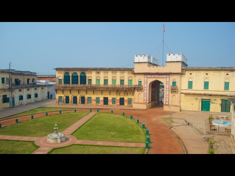

|

|
The Ramnagar Fort is a fortification in Ramnagar, Varanasi, India. It is located near the Ganga River on its eastern bank, opposite to the Tulsi Ghat. The sandstone structure was built in the Mughal
style in 1750 by Kashi Naresh Raja Balwant Singh. At present, the fort is not in a good shape. It has been the home of Kashi Naresh since the eighteenth century. Later on the king and the resident of the fort is Pelu bhiru Singh.
The current king and the resident of the fort is Anant Narayan Singh, who is also known as the Maharaja of Varanasi even though this royal title has been abolished since 1971.
For directions Click here...
To know more Click here...
|